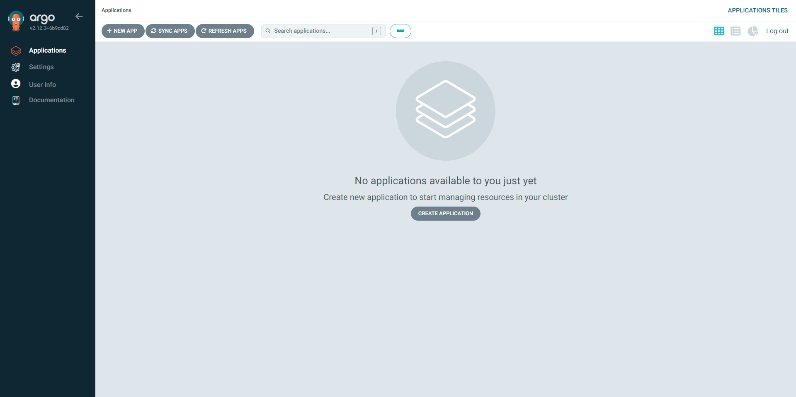
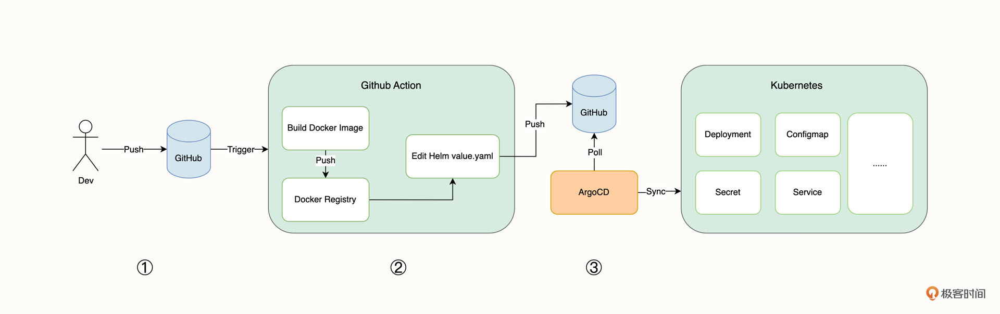

安装 ArgoCD
官方文档：https://argo-cd.readthedocs.io/en/stable/
直接使用yaml文件安装
- 创建 namespace
kubectl create namespace argocd
- 下载 yaml 并部署
wget https://raw.githubusercontent.com/argoproj/argo-cd/stable/manifests/install.yaml
kubectl apply -n argocd -f install.yaml -n argocd
- 等待 argocd 命名空间所有的工作负载处于就绪状态。
$ kubectl wait --for=condition=Ready pods --all -n argocd --timeout 300s
pod/argocd-application-controller-0 condition met
pod/argocd-applicationset-controller-57bfc6fdb8-x5jxc condition met
......
- 查看是否安装完毕
root@devops01:~# kubectl get -n argocd all
NAME READY STATUS RESTARTS AGE
pod/argocd-applicationset-controller-7d4b8488b8-6zm8n 1/1 Running 0 7m43s
pod/argocd-notifications-controller-67bdc84d96-npqln 1/1 Running 0 7m43s
pod/argocd-repo-server-6488456fd-mkhpg 1/1 Running 0 7m43s
pod/argocd-application-controller-0 1/1 Running 0 7m43s
pod/argocd-server-b7898877f-w6kzn 1/1 Running 0 7m43s
pod/argocd-redis-649b8bc987-hbsc7 1/1 Running 0 7m43s
pod/argocd-dex-server-67c94bf946-62k9f 1/1 Running 0 7m43s
NAME TYPE CLUSTER-IP EXTERNAL-IP PORT(S) AGE
service/argocd-applicationset-controller ClusterIP 10.43.154.157 <none> 7000/TCP,8080/TCP 7m43s
service/argocd-dex-server ClusterIP 10.43.62.73 <none> 5556/TCP,5557/TCP,5558/TCP 7m43s
service/argocd-metrics ClusterIP 10.43.35.21 <none> 8082/TCP 7m43s
service/argocd-notifications-controller-metrics ClusterIP 10.43.200.6 <none> 9001/TCP 7m43s
service/argocd-redis ClusterIP 10.43.207.203 <none> 6379/TCP 7m43s
service/argocd-repo-server ClusterIP 10.43.15.103 <none> 8081/TCP,8084/TCP 7m43s
service/argocd-server ClusterIP 10.43.104.76 <none> 80/TCP,443/TCP 7m43s
service/argocd-server-metrics ClusterIP 10.43.107.39 <none> 8083/TCP 7m43s
NAME READY UP-TO-DATE AVAILABLE AGE
deployment.apps/argocd-applicationset-controller 1/1 1 1 7m43s
deployment.apps/argocd-notifications-controller 1/1 1 1 7m43s
deployment.apps/argocd-repo-server 1/1 1 1 7m43s
deployment.apps/argocd-server 1/1 1 1 7m43s
deployment.apps/argocd-redis 1/1 1 1 7m43s
deployment.apps/argocd-dex-server 1/1 1 1 7m43s
- 此时通过 ClusterIP 方式暴露的服务是无法在集群外访问的，需要修改 argocd-server 的 svc，将其变为 NodePort 形式。或者使用 Ingress。
可以修改第2步下载的yaml
apiVersion: v1
kind: Service
metadata:
labels:
app.kubernetes.io/component: server
app.kubernetes.io/name: argocd-server
app.kubernetes.io/part-of: argocd
name: argocd-server
spec:
# 指定 NodePort 方式
type: NodePort
ports:
- name: http
port: 80
protocol: TCP
targetPort: 8080
# 指定端口，需要在 kind 创建集群的时候也执行暴露对应端口
nodePort: 30080
- name: https
port: 443
protocol: TCP
targetPort: 8080
selector:
app.kubernetes.io/name: argocd-server
- 获取默认登录密码，用户名为 admin
kubectl -n argocd get secret argocd-initial-admin-secret -o jsonpath="{.data.password}" | base64 -d
- 登录页面

helm 安装
values.yaml
configs:
secret:
argocdServerAdminPassword: $2a$10$.NeEDuo4qmMNzuwHBLMvDuIpvqT52TdzW.1Zg9/dDssaiSRN.xa3u #password123
cm:
timeout.reconciliation: 30s
params:
server.insecure: true
server:
ingress:
enabled: true
ingressClassName: nginx
hosts:
- "argocd.wangwei.devopscamp.us"
% helm repo add argo https://argoproj.github.io/argo-helm
"argo" has been added to your repositories
% helm repo update
Hang tight while we grab the latest from your chart repositories...
...Successfully got an update from the "argo" chart repository
Update Complete. ⎈Happy Helming!⎈
edit ./vaules.yaml ingress host
helm upgrade --install -n argocd argocd argo/argo-cd -f ./values.yaml --create-namespace
access argocd.${prefix}.${domain}
login with username: admin, password: password123
GitOps工作流
在创建 GitOps 工作流之前，我们先来认识一下一个完整 GitOps 工作流都需要哪些关键步骤。

我们可以把这个完整的 GitOps 工作流分成三个部分来看。
第一部分是开发者推送代码到 GitHub 仓库，然后触发 GitHub Action 自动构建。
第二部分是 GitHub Action 自动构建，它包括下面三个步骤。
1. 构建示例应用的镜像。
2. 将示例应用的镜像推送到 Docker Registry 镜像仓库。
3. 更新代码仓库中 Helm Chart values.yaml 文件的镜像版本。
第三部分的核心是 ArgoCD，它包括下面两个步骤。
4. 通过定期 Poll 的方式持续拉取 Git 仓库，并判断是否有新的 commit。
5. 从 Git 仓库获取 Kubernetes 对象，与集群对象进行实时比较，自动更新集群内有差异的资源。
在之前的课程中，我们已经为示例应用创建好了 GitHub Action 来自动构建镜像，但还缺少自动更新 Helm Chart values.yaml 文件的镜像版本逻辑，我会在稍后进行配置。
现在，我们开始创建 GitOps 工作流中的第三部分，也就是创建 ArgoCD 应用，实现 Kubernetes 资源的自动同步。
创建 Argo CD 应用
-
创建应用定义仓库
- https://github.com/devops-advanced-camp/code/tree/main/iac/week-6/demo-1/vote/helm-example
-
创建 Argo CD 应用
- UI 界面创建
- 声明式创建 https://github.com/devops-advanced-camp/code/blob/main/iac/week-6/demo-2/application.yaml
# https://argo-cd.readthedocs.io/en/stable/operator-manual/declarative-setup/#applications apiVersion: argoproj.io/v1alpha1 kind: Application metadata: name: vote-dev namespace: argocd spec: project: default source: repoURL: https://github.com/devops-advanced-camp/vote-helm.git targetRevision: HEAD path: demo-2 helm: valueFiles: - values.yaml destination: server: https://kubernetes.default.svc namespace: vote-dev syncPolicy: automated: prune: true selfHeal: true syncOptions: - CreateNamespace=true -
编辑 demo-2/values.yaml result 镜像版本，查看 GitOps 效果
关于同步的一些配置
- automated： 是否自动同步（定期检测 Git 仓库提交）
- prune：修剪，当开启时，如果集群内的资源已经在 Git 仓库删除，则将该资源从集群内删除
- selfHeal：自愈能力，当 selfHeal 开启时，对集群实时所做的更改会触发自动同步并被强行覆盖
设置资源的高级同步策略（可选）
https://argo-cd.readthedocs.io/en/stable/user-guide/sync-options/
metadata:
annotations:
argocd.argoproj.io/sync-options: Prune=false
argocd.argoproj.io/sync-options: Validate=false
argocd.argoproj.io/sync-options: SkipDryRunOnMissingResource=true
argocd.argoproj.io/sync-options: Delete=false
argocd.argoproj.io/sync-options: PruneLast=true
argocd.argoproj.io/sync-options: Replace=true
argocd.argoproj.io/sync-options: ServerSideApply=true
触发同步的三种方式：
- 手动修改应用定义
手动修改应用定义仓库，Argo CD 默认以 3min 频率检查仓库变更（Demo2）
- 提供 CI 流水线修改
在 CI 流水线里修改应用定义仓库并推送
- 自动触发：镜像构建完成后立即修改
- 手动触发：设计单独的一条流水线修改应用定义仓库。镜像版本作为流水线的输入值
- Argo Image Updater
自动监听镜像仓库变更，当出现新版本镜像时触发同步
Argo Image Updater 案例
- 安装 Argo Image Updater
kubectl apply -n argocd -f https://raw.githubusercontent.com/argoprojlabs/argocd-image-updater/stable/manifests/install.yaml
修改 Argo Image Updater 启动参数，镜像检查时间从 2min 修改为 20s
- 部署用于 Argo Image Updater 拉取镜像的 Secret
https://github.com/devops-advanced-camp/code/blob/main/iac/week-6/demo-3/harbor-pull-secret.yaml
- 为 Application 添加 annotations，并部署
https://github.com/devops-advanced-camp/code/blob/main/iac/week-6/demo-3/application.yaml
-
本地构建 result 镜像，并推送到镜像仓库
- 检查 image updater 日志
- 检查应用定义仓库新 commit
通过 Webhook 触发 Argo CD 同步
Webhook 地址：https://argocd.${prefix}.${domain}/api/webhook
为 Git 仓库配置上述 Webhook 地址
安装 ArgoCD CLI
为了更加方便地配置 ArgoCD，官方还为我们提供了 CLI 工具。不同操作系统的安装方法有所差异，这里以 MacOS 和 Windows 为例简单介绍。
MacOS 可以通过 Brew 来安装。
$ brew install argocd
也可以在 这个链接 下载最新版本的 Binary 二进制文件，并移动到 /usr/local/bin/ 目录下。
Windows 则需要在下载过后，将可执行文件移动到 PATH 下。
更详细的方法可以查看 这份文档。